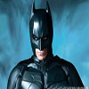
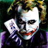
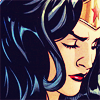
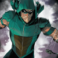
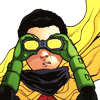

| Ảnh Chân Dung | Tên Nhân Vật | Tiểu Sử Nhân Vật | Giới Tính | Điện Thoại | |
|---|---|---|---|---|---|
| Superman | Siêu Nhân có tên thật là Kal-El được sinh ra ở hành tinh Krypton cách xa Trái Đất. Anh được gởi đến trái
đất bởi cha của mình - Jor-El (một nhà khoa học) bằng một tên lửa trước khi hành tinh của họ bị hủy
diệt.
Đến trái đất, đứa trẻ được làm con của một cặp vợ chồng nông dân ở Kansas, họ đặt tên đứa trẻ là Clark Kent. Khi trưởng thành, Clark đến Metropolis, làm việc tại toà soạn Daily Planet nổi tiếng và sử dụng những khả năng đặc biệt có được khi ở Trái Đất để chiến đấu trừ gian diệt bạo. Siêu Nhân yêu một cô gái có tên là Lois Lane, là một phóng viên cùng tòa soạn báo với anh và sau này là vợ của anh, ngoài ra hai kẻ thù chính của Siêu Nhân là Lex Luthor (từ trái đất) và Darkseid (từ vũ trụ) |
Nam | Superman@Superman.com | 701-555-0134 | |
|  | Batman | Bruce Wayne là con trai độc nhất của Thomas Martha Wayne. Gia đình Wayne là một danh gia vọng tộc tỉ
phú tại Gotham City, một trong những thành phố trù phú nhất nước Mỹ. Từ nhỏ, cậu bé Wayne đã được
cha mẹ yêu thương đùm bọc và được nuôi dạy để trở thành người kế thừa tập đoàn Wayne.
Cho rằng “bọn tội phạm là một lũ mê tín và hèn nhát” nên Bruce tìm cách “cải trang bản thân để khiến chúng sợ hãi tột độ”. Ngay khi đó, một con dơi bất ngờ bay vào dinh thự Wayne trước sự chứng kiến của anh. Nhận ra đây chính là “sinh vật bóng đêm, đen trùi trũi và đáng kinh sợ” đúng như mình tìm kiếm, Bruce bèn khoác lên mình bộ đồ con dơi to tổ bố và lấy tên là Batman. |
Nam | Batman@Batman.com | 214-555-0168 |
|  | Joker | Joker không phải là một kẻ tâm thần theo nghĩa thông thường, mà hắn có thứ gì đó kiểu như ‘quá sáng suốt’
mà do thế, hắn tự mình định nghĩa lại bản thân mỗi ngày để thích ứng với dòng chảy hỗn loạn của đời
sống đô thị hiện đại.
Hắn đã gây ra nhiều cái chết dã man, vô nhân tính như việc lẻn vào nhà của một đôi vợ chồng già vào ban đêm, dùng dao cạo chém điên dại vào họ đến khi hai người chỉ còn là một đống thịt nát rồi thoải mái nằm chình ình trên hai cái xác ngủ một giấc ngon lành. Hay thậm chí là cắm đầy những mảnh rao cạo vào đầu ngón tay để biến bàn tay của mình thành một món vũ khí nguy hiểm. Những cái chết đó vẫn còn chưa tệ hại bằng cái cách mà Joker xác định rằng một ngày nào đó mình sẽ chết. Thế nên cái chết đến bất cứ khi nào cũng chỉ là một sự giải thoát cho hắn mà thôi. |
Nam | Joker@Joker.com | 322-555-0143 |
| Flash | Barry Allen là con của Henry Allen và Nora Allen. Barry Allen là một nhà khoa học pháp y (Flash: Iron
Heights one-shot) Anh tốt nghiệp trong ba năm với môn chính là hóa hữu cơ và là người trẻ nhất trong
thời điểm đó lấy được bằng tội phạm học.
. Barry đã giúp các cơ quan chức năng bắt giữ một tên cướp ngân hàng, và anh được giao công việc như là một nhà khoa học cảnh sát cho cảnh sát thành phố . Mong muốn trở thành 1 cảnh sát, để điều tra về cái chết của mẹ anh và chứng minh cha anh vô tội, anh đồng ý. Đêm đó trong một cơn bão điện, Barry trở lại phòng thí nghiệm sau khi thăm cha mình trong trại giam. Bất ngờ, một tia chớp sọc qua cửa sổ, đánh nát 1 tủ hóa chất và bao phủ Barry trong hóa chất, điện. Sau nhiều ngày nằm trong bệnh viện Barry đã có 1 giấc mơ, anh mơ thấy cảnh hiện trường vụ án mẹ mình và cảnh sát đưa cha anh đi, nhóc Barry chạy vào nhà nhìn xác mẹ mình và khi đó Barry tỉnh giấc. Anh chạy, chạy thật nhanh và khi anh nhận thức được sự việc thì anh đã đi rất rất xa rồi. Quyết định sử dụng sức mạnh của mình phục vụ nhân loại. |
Nam | Flash@Flash.com | 118-555-0188 | |
|  | Wonder Woman | Wonder Woman là công chúa – chiến binh Amazon và một trong những siêu anh hùng mạnh nhất.
Con gái của Hippolyta, bà được trao quyền lực của các vị thần để chiến đấu chống lại cái ác trong tất cả các hình thức của nó. Mặc dù cô lớn lên hoàn toàn do phụ nữ trên đảo Themyscira, cô được gửi như một đại sứ thế giới của con người, truyền bá thông điệp lý tưởng của họ về sức mạnh và tình yêu. Wonder Woman chống tội phạm và hoạt động như một mô hình vai trò tích cực đối với phụ nữ ở khắp mọi nơi. thiết bị của cô bao gồm các Lasso của Chân lý, găng tay ma thuật, và một máy bay phản lực vô hình. Trong danh tính bí mật, cô đã thông qua để trở nên gần gũi với con người, cô là Diana Prince, một nhân viên chính phủ cho Sở Metahuman giao. Wonder Woman cũng là một thành viên sáng lập của Justice League of America. |
Nữ | WonderWoman@WonderWoman.com | 908-555-0120 |
| Harley Quinn | Harleen Quinzel là một bác sỹ tâm lý tội phạm làm việc ở Arkham Asylum (Nhà thương điên Arkham). Trong
những lần tiếp xúc với Joker khi hắn bị giam giữ ở đây, cô đã đem lòng yêu hắn (Harleen cảm thầy
tìm được sự đồng cảm từ Joker bởi vì cô có một tuổi thơ không hạnh phúc).
Cô thay đổi cách ăn mặc, thay đổi giọng nói và tính cách, trở thành cộng sự số một bên cạnh Joker, tạo nên cặp đôi tai tiếng bậc nhất trong thế giới truyện tranh. Joker thường đối xử khá tệ bạc với Harley Quinn nhưng cô vẫn yêu hắn vô điều kiện. Vì thế, dù Harley Quinn đóng vai phản diện, nhiều người vẫn cảm thấy cô là một nhân vật tội nghiệp và đáng thương. Harley Quinn thường gọi Joker là “Mr. J” (Ngài J) hoặc “puddin” (tên một loại bánh), và gọi Batman là “B-Man” (chữ B có thể viết tắt của nhiều từ khác nhau như “bad” hay “bozo”). |
Nữ | HarleyQuinn@HarleyQuinn.com | 317-555-0116 | |
|  | Green Arrow | Trước khi trở thành Mũi tên xanh, thì Oliver là cậu ấm ăn chơi trác táng con của một chủ tịch tập đoàn
lớn ở thành phố Starling. Một tay phá phách thực sự, khác xa với Bruce Wayne. Rồi trong một biến
cố, khi chiếc du thuyền của Oliver gặp bão và bị đánh đắm.
Là người duy nhất còn sống và bị dạt vào 1 hòn đảo tên được gọi là “Đảo luyện ngục”. Tưởng chừng như hòn đảo sẽ khiến Oliver phát điên và gục ngã, nhưng với bản năng sinh tồn mạnh mẽ a vẫn sống sót và phát hiện ra được khả năng bắn cung siêu khủng của mình. Sau 5 năm sống sót trên hoang đảo, Oliver được trở lại đất liền. Anh đã thay đổi suy nghĩ về cuộc sống, a quyết tâm làm sạch thành phố của mình bằng cách dùng khả năng của mình để trưng phạt những kẻ ác. Tập đoàn của nhà Oliver Queen cũng là 1 tập đoàn công nghệ nên a có nhiều món “đồ chơi” hiện đại. Tuy nhiên, tay này khá bộp chộp, nhiều khi hành động thiếu suy nghĩ, được cái dẻo mỏ nên gái theo cả đàn. Vì là 1 xạ thủ xuất sắc nên Oliver có rất nhiều kẻ thủ cũng là cung thu như: Peter Lomax, Sag, Rainbow Archer, Merlyn. |
Nam | GreenArrow@GreenArrow.com | 802-555-0173 |
|  | Robin | Tên “Robin the Boy Wonder ” và của trang phục ban đầu kiểu thời trung cổ được lấy cảm hứng từ The Adventures
of Robin Hood. Robinson ghi nhận ông “đến với Robin Hood bởi vì The Adventures of Robin Hood được
yêu thích vào thời niên thiếu của tôi.
Và nếu nhìn vào nó, trang phục của Wyeth, từ bộ nhớ của tôi, bởi vì tôi đã không có cuốn sách để xem xét.” . Sau đó kễ lại nguồn gốc Robin mà trong đó thường nói cái tên Robin từ loài chim cổ đỏ của Mỹ, không phải Robin Hood, All Star Batman and Robin của Frank Miller là một ngoại lệ đáng chú ý: đôi khi cả hai nguồn gốc đều được ghi nhận, như trong The Untold Legend of the Batman của Len Wein.) Mặc dù Robin thường được biết đến là trợ tá của Batman, các Robin sau này cũng là thành viên của nhóm siêu anh hùng Teen Titans với Robin đầu tiên, Dick Grayson, là một thành viên sáng lập và cũng là lãnh đạo của nhóm và Robin thứ ba, Tim Drake, là thủ lĩnh hiện thời của nhóm. |
Nam | Robin@Robin.com | 803-555-0100 |